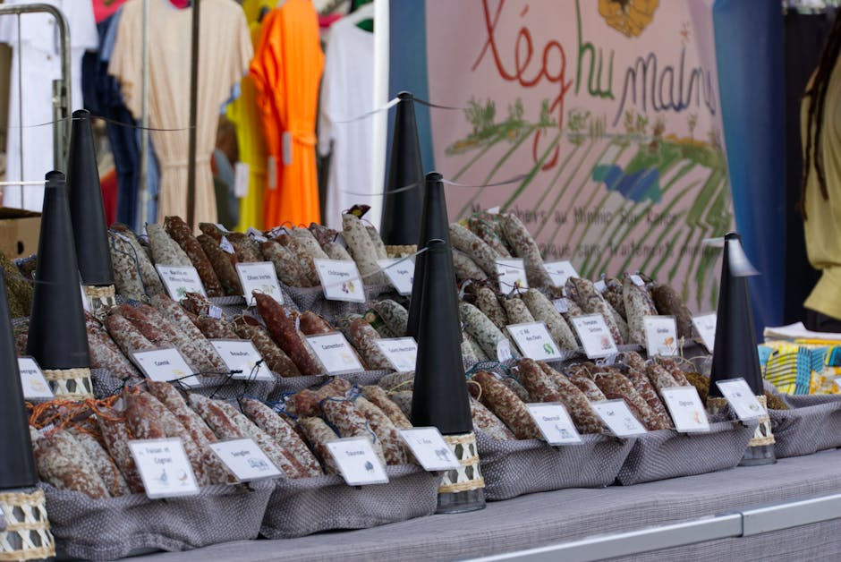
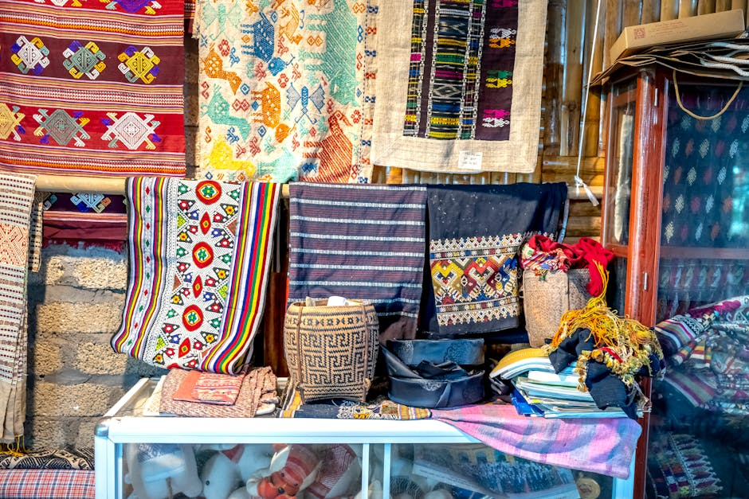

Cosa Offre la Nostra Guida
Esplora le meraviglie del fatto a mano e sostieni le eccellenze del nostro territorio attraverso percorsi curati.

Botteghe Artigiane
Mappiamo e recensiamo le migliori botteghe storiche e contemporanee per farti scoprire i segreti dell'artigianato italiano.

Mercati Artigianali
Il calendario completo dei mercatini e delle fiere locali, per non perdere nessuna occasione di vivere la cultura del territorio.

Prodotti Fatti a Mano
Approfondimenti sui materiali, le tecniche e la storia che si celano dietro i più pregiati prodotti fatti a mano d'Italia.